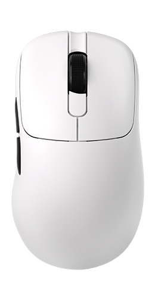

AJ179
Gaming mouse
Mouse Buttons
Click a callout to rebind. Grayed options are not available yet.
Button Function
DPI Sensitivity
Up to 6 stages · PAW3395 up to 26,000 DPI
In constant light mode this is the LED color (same as official driver).
Report Rate
How often the mouse reports position to the PC
Live preview of the selected effect
Lighting Effect
Constant mode color = active DPI stage color (change colors on the DPI tab)
Macros are not available in this version.
Mouse Settings
1mm or 2mm
Straighten out slight angle offsets
Smooth cursor jitter at high DPIs
ms · higher reduces double-clicks
Local only
Power & Sleep
Inactivity timeout
UI only
System
Light or dark interface theme
Prevents accidental rebinding of LMB
Save or load this profile as a JSON file
Experimental Features
Software-level unlocks that bypass OEM app limitations.
Unlock 50-step increments (default is 100)
Changes RGB to Breathing Red when battery drops below 15%
Changes LED color based on battery (Green > 50, Yellow > 25, Red < 25)
Nibble
Open WebHID mouse configurator
Configure DPI, polling rate, lighting, keys, sensor options, and power — entirely in the browser. No Windows installer required.
Derived from
Protocol packets and device behavior were reverse-engineered from the official Windows driver package. Nibble is an independent reimplementation and is not affiliated with the original vendor.
Hardware SKUs exercised during development include AJ179 / AJ179P (PAW3395) and related 248A/249A wireless receivers. Model names are product identifiers only.
What works
- Report rate, DPI stages & stage colors
- Lighting (solid / breathe / off)
- Key remapping (supported functions)
- LOD, angle snap, ripple, sleep, debounce
- Battery & charging status (best-effort; dock may hold last %)
Macros are not implemented.
Disclaimer
Use at your own risk. Writing HID config can misconfigure your mouse if another driver is open or if you apply unsupported key bindings. Close other mouse software before connecting.